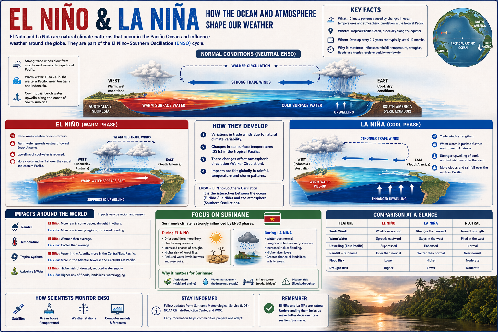
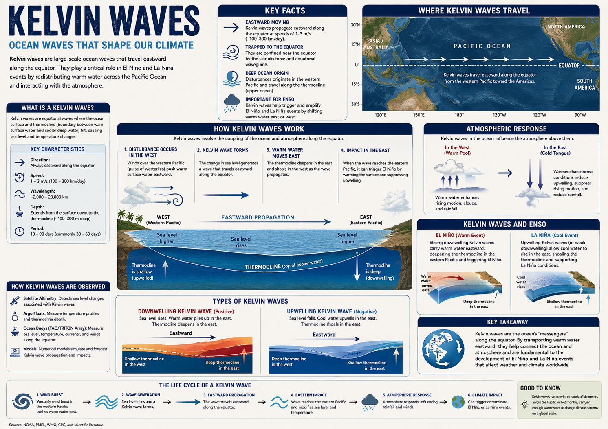
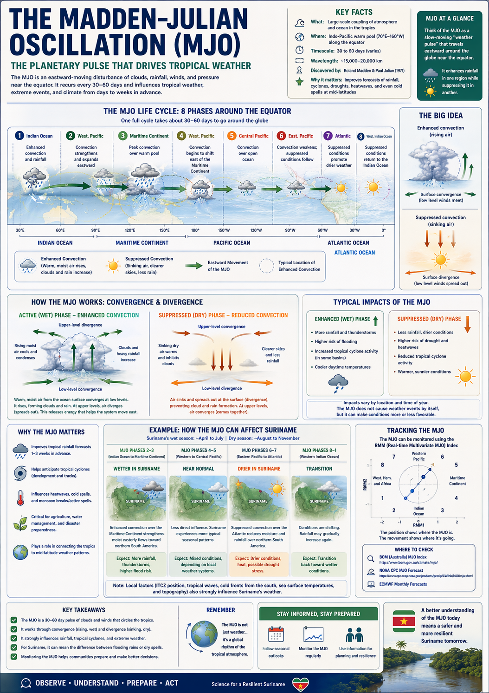
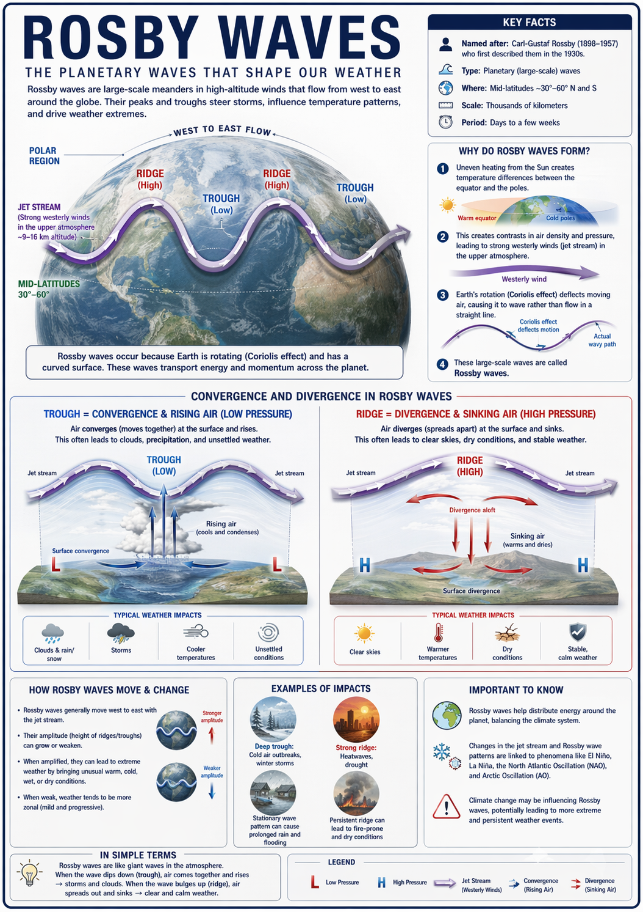
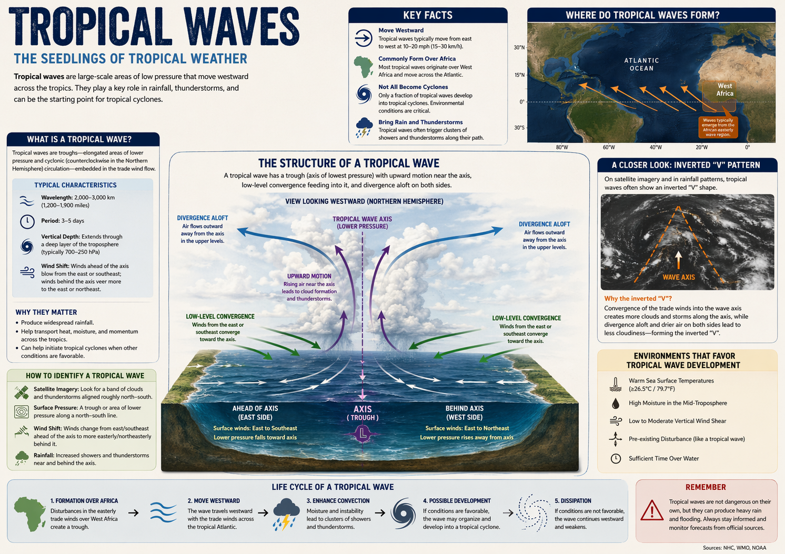

Weer uitgelegd
Korte artikelen die veelgestelde vragen beantwoorden over het dagelijkse weer.
- Waarom regent het zoveel in het regenseizoen?
- Wat is een tropical wave?
- Wat is de ITCZ?
- Hoe ontstaan onweersbuien?
Een laagdrempelig kennisportaal voor iedereen: scholieren, journalisten, boeren en nieuwsgierige burgers. Begrijp waarom het regent zoals het regent, wat een tropical wave is, en hoe je je kunt voorbereiden op extreem weer.
Alle kennis over weer en klimaat is verdeeld in zes hoofdonderdelen. Klik op een onderwerp om verder te lezen.
Korte artikelen die veelgestelde vragen beantwoorden over het dagelijkse weer.
Het verschil tussen weer en klimaat, en de grote patronen die ons klimaat sturen.
Met afbeeldingen en animaties: van onweer en bliksem tot mist en regenbogen.
Praktische adviezen om veilig te blijven tijdens extreem weer.
Voor scholieren en studenten: de basis van het vak op een toegankelijke manier.
Interactieve overzichten van neerslag, temperatuur en historische records.
Grote weerpatronen die het klimaat van Suriname beïnvloeden, visueel uitgelegd. Bekijk de volledige uitleg op de pagina Klimaat uitgelegd.

Hoe veranderingen in oceaan- en luchtcirculatie het weer wereldwijd — en in Suriname — beïnvloeden.

Oceaangolven langs de evenaar die warm water verplaatsen en El Niño/La Niña helpen opwekken.

De "weerpuls" die elke 30 tot 60 dagen rond de evenaar trekt en regenseizoenen beïnvloedt.

De grote planetaire golven in de straalstroom die stormbanen en temperatuurpatronen sturen.

De "kiemen" van tropisch weer: lagedrukgebieden die buien en onweer richting Suriname brengen.
Klopt het nou wel of niet? We zetten veelgehoorde misvattingen recht.
❌ Mythe: "Bliksem slaat nooit twee keer op dezelfde plek in."
✅ Feit: Bliksem kan meerdere keren dezelfde plaats treffen — hoge gebouwen en bomen worden zelfs vaak geraakt.